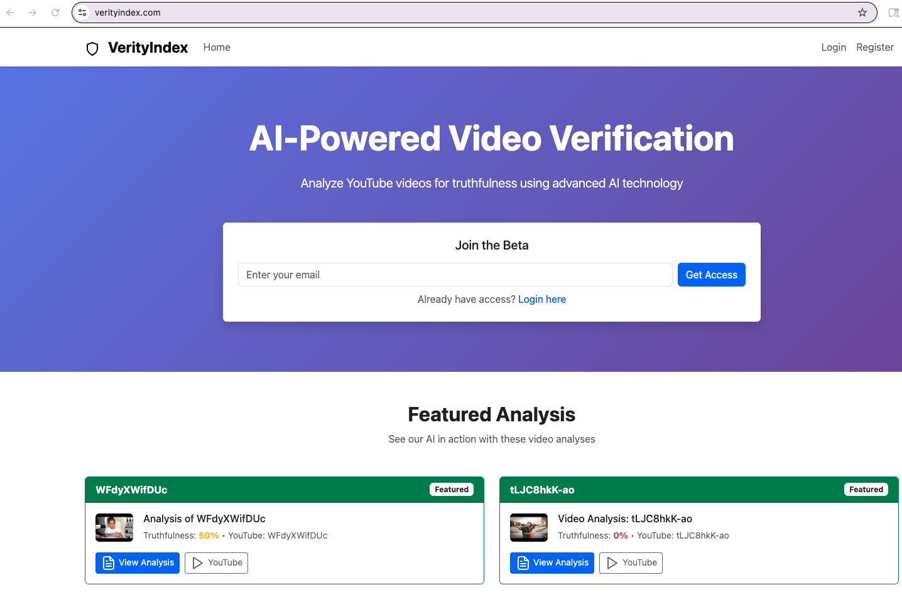

Legal — video claim dossier
Deposition clips, expert witness video, and discovery media turned into a claim inventory with uncertainty ledger and primary-source citations.
- Per-matter combined PDF dossier
- Claim-level CSV/JSON export
- File upload — no YouTube required